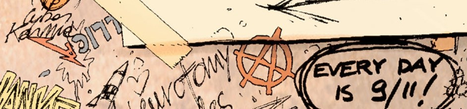
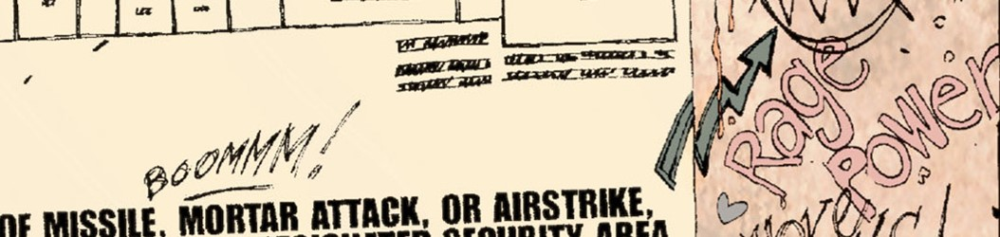
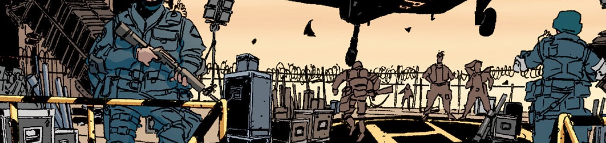
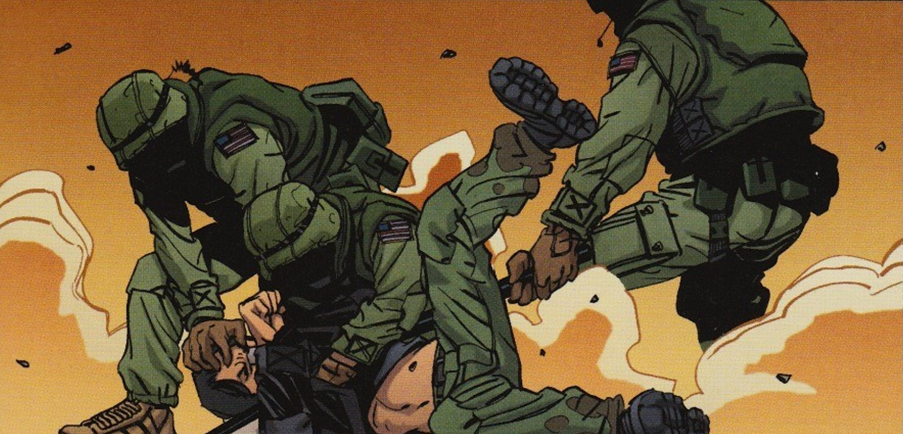

👋 Bienvenu sur le site d'apprentissage de l'anglais codé par Kevin Özkaraca, Ce site se divise en 3 grandes
catégories :

1️⃣ De la grammaire (dans les sections "units") basé sur les livres des éditions cambridge

2️⃣ Du vocabulaire (dans les sections "sentences") basé sur des phrases aléatoires du A1 au C1

3️⃣ Une histoire, celle de DMZ en bande déssinée...

⚠️ ce site n'ayant pas de base de données votre progression est à suivre en autonomie.
Si vous voulez me suivre, m'ajouter à vos amis, ou prendre contact avec moi, voici mes réseaux. Une étoile, un
pouce en l'air un commentaire positif font toujours plaisir.